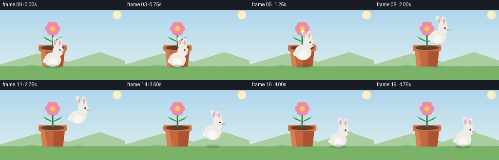
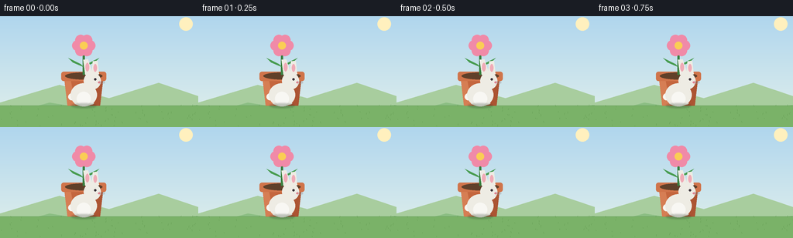

CODING AGENTS AS PIXEL WORLD MODELS
traex/Seed-2.1-Pro-0915 · dynamic_spatial_relationship_0021
点击播放 · 原生 RGB 像素
逐轮保存的候选
回放视频、检查图与代码变化。
每份候选均可单独播放。实际图片检查记录在下方工具轨迹中。
候选 01播放与检查图
点击播放 · 原生 RGB 像素


展开代码变化
--- 上一保存版本
+++ 本次保存版本
@@ -0,0 +1,311 @@
+"""Text-to-video: rabbit in front of a flowerpot, then jumps to its right.
+
+Renders 20 frames (256x144, 4 fps) procedurally with PIL. Everything is drawn
+at 3x resolution and downsampled for smooth edges. No external assets.
+"""
+import math
+
+import numpy as np
+from PIL import Image, ImageDraw, ImageFilter
+
+import artifact_io
+
+W, H = 256, 144
+N_FRAMES = 20
+FPS = 4.0
+SS = 3 # supersampling factor
+
+# Scene layout (in final-resolution coordinates).
+GROUND_Y = 116
+POT_CX = 108 # flowerpot center x
+
+# Rabbit key positions: start (in front of pot), then right of pot.
+START_X = 108
+END_X = 182
+RABBIT_BASE_Y = GROUND_Y - 2
+
+
+def lerp(a, b, t):
+ return a + (b - a) * t
+
+
+def smoothstep(t):
+ t = max(0.0, min(1.0, t))
+ return t * t * (3 - 2 * t)
+
+
+def draw_background(img):
+ """Sky gradient, soft sun, distant hills, grass ground."""
+ draw = ImageDraw.Draw(img)
+ w, h = img.size
+ top = np.array([176, 214, 238], dtype=float)
+ bottom = np.array([226, 240, 235], dtype=float)
+ for y in range(h):
+ t = y / max(1, h - 1)
+ color = tuple((lerp(top, bottom, t)).astype(int))
+ draw.line([(0, y), (w, y)], fill=color)
+
+ # Soft sun.
+ sx, sy, sr = w - 48, 30, 16
+ for r, alpha in ((sr + 10, 40), (sr + 5, 70), (sr, 255)):
+ draw.ellipse([sx - r, sy - r, sx + r, sy + r], fill=(255, 240, 190, alpha))
+
+ # Distant rolling hills.
+ draw.polygon(
+ [(0, h * 0.78), (w * 0.3, h * 0.62), (w * 0.55, h * 0.74),
+ (w * 0.8, h * 0.6), (w, h * 0.72), (w, h), (0, h)],
+ fill=(168, 205, 158),
+ )
+ draw.polygon(
+ [(0, h * 0.9), (w * 0.25, h * 0.78), (w * 0.6, h * 0.88),
+ (w, h * 0.8), (w, h), (0, h)],
+ fill=(140, 190, 132),
+ )
+
+ # Ground band.
+ gy = GROUND_Y * SS
+ draw.rectangle([0, gy, w, h], fill=(122, 178, 104))
+ draw.line([(0, gy), (w, gy)], fill=(104, 162, 88), width=2)
+ # A few grass blades.
+ rng = np.random.default_rng(7)
+ for _ in range(70):
+ gx = int(rng.integers(0, w))
+ g_y0 = int(gy + rng.integers(2, h - gy - 2))
+ g_len = int(rng.integers(3, 8))
+ draw.line([(gx, g_y0), (gx + int(rng.integers(-2, 3)), g_y0 - g_len)],
+ fill=(96, 152, 80), width=1)
+
+
+def draw_flowerpot(img):
+ """Terracotta pot with soil, green leaves and a blooming flower."""
+ draw = ImageDraw.Draw(img)
+ s = SS
+ cx = POT_CX * s
+ gy = GROUND_Y * s
+
+ # Pot body (trapezoid), rim, and shading.
+ rim_w, base_w = 58 * s, 42 * s
+ top_y, bot_y = gy - 44 * s, gy
+ rim_h = 10 * s
+ body = [
+ (cx - rim_w / 2 + 4 * s, top_y + rim_h),
+ (cx + rim_w / 2 - 4 * s, top_y + rim_h),
+ (cx + base_w / 2, bot_y),
+ (cx - base_w / 2, bot_y),
+ ]
+ draw.polygon(body, fill=(196, 102, 62))
+ # Right-side shading.
+ shade = [
+ (cx + 2 * s, top_y + rim_h),
+ (cx + rim_w / 2 - 4 * s, top_y + rim_h),
+ (cx + base_w / 2, bot_y),
+ (cx + 2 * s, bot_y),
+ ]
+ draw.polygon(shade, fill=(172, 84, 50))
+ # Left highlight.
+ hi = [
+ (cx - rim_w / 2 + 4 * s, top_y + rim_h),
+ (cx - rim_w / 2 + 12 * s, top_y + rim_h),
+ (cx - base_w / 2 + 10 * s, bot_y),
+ (cx - base_w / 2, bot_y),
+ ]
+ draw.polygon(hi, fill=(214, 126, 84))
+ # Rim.
+ draw.rounded_rectangle(
+ [cx - rim_w / 2, top_y, cx + rim_w / 2, top_y + rim_h + 2 * s],
+ radius=3 * s, fill=(208, 116, 74),
+ )
+ # Soil.
+ draw.ellipse(
+ [cx - rim_w / 2 + 5 * s, top_y + 1 * s,
+ cx + rim_w / 2 - 5 * s, top_y + rim_h],
+ fill=(96, 64, 42),
+ )
+
+ # Stem.
+ stem_top = top_y - 34 * s
+ draw.line([(cx, top_y + 4 * s), (cx, stem_top + 6 * s)],
+ fill=(58, 128, 64), width=3 * s)
+
+ # Leaves.
+ for side in (-1, 1):
+ lx = cx + side * 14 * s
+ ly = top_y - 12 * s
+ leaf = [
+ (cx, ly + 6 * s), (lx, ly), (cx + side * 20 * s, ly - 6 * s),
+ (cx + side * 4 * s, ly + 2 * s),
+ ]
+ draw.polygon(leaf, fill=(72, 156, 80))
+
+ # Flower: yellow center with petals (two-tone pink).
+ fx, fy = cx, stem_top
+ petal_r = 7 * s
+ for k in range(6):
+ ang = k * math.tau / 6
+ px = fx + math.cos(ang) * 8 * s
+ py = fy + math.sin(ang) * 8 * s
+ draw.ellipse([px - petal_r, py - petal_r, px + petal_r, py + petal_r],
+ fill=(240, 138, 168))
+ draw.ellipse([fx - 5 * s, fy - 5 * s, fx + 5 * s, fy + 5 * s],
+ fill=(250, 206, 84))
+
+
+def draw_rabbit(img, x, y_ground, hop_t, squash):
+ """Draw a cartoon rabbit. x is center, y_ground is the foot baseline.
+
+ hop_t in [0, 1] is the phase of the jump for leg/ear poses;
+ squash scales vertical body proportions for takeoff/landing.
+ """
+ draw = ImageDraw.Draw(img)
+ s = SS
+ cx = x * s
+ gy = y_ground * s
+
+ fur = (238, 236, 228)
+ fur_shade = (214, 210, 200)
+ pink = (240, 170, 182)
+ dark = (58, 52, 58)
+
+ # Vertical squash/stretch and airborne lift.
+ body_w = 17 * s
+ body_h = 15 * s * squash
+ body_cy = gy - 12 * s - (body_h - 15 * s) / 2
+
+ # Tail (behind body, on the left).
+ draw.ellipse(
+ [cx - body_w - 3 * s, body_cy - 2 * s,
+ cx - body_w + 6 * s, body_cy + 7 * s],
+ fill=(248, 247, 243),
+ )
+
+ # Feet: tucked while airborne, planted on the ground otherwise.
+ airborne = 0.0 < hop_t < 1.0
+ if airborne:
+ foot_y = gy - 6 * s
+ foot_dx = 4 * s
+ else:
+ foot_y = gy - 3 * s
+ foot_dx = 7 * s
+ for side in (-1, 1):
+ fx0 = cx + side * foot_dx - 5 * s
+ draw.ellipse([fx0, foot_y, fx0 + 11 * s, foot_y + 4 * s], fill=fur_shade)
+
+ # Body.
+ draw.ellipse(
+ [cx - body_w, body_cy - body_h, cx + body_w, body_cy + body_h],
+ fill=fur,
+ )
+ # Belly patch.
+ draw.ellipse(
+ [cx - 9 * s, body_cy - 4 * s, cx + 9 * s, body_cy + body_h - 1 * s],
+ fill=(248, 247, 243),
+ )
+
+ # Head sits forward (to the right of body center).
+ head_r = 11 * s
+ head_cx = cx + 11 * s
+ head_cy = body_cy - body_h - 3 * s
+ draw.ellipse(
+ [head_cx - head_r, head_cy - head_r,
+ head_cx + head_r, head_cy + head_r],
+ fill=fur,
+ )
+
+ # Ears: long ovals; tilt back slightly while airborne.
+ ear_tilt = -0.35 if airborne else -0.12
+ for i, side in enumerate((-1, 1)):
+ ear_len = (20 - i * 2) * s
+ ear_w = 5 * s
+ base_x = head_cx + side * 4 * s
+ base_y = head_cy - head_r + 3 * s
+ tip_x = base_x + math.sin(ear_tilt) * ear_len + side * 2 * s
+ tip_y = base_y - math.cos(ear_tilt) * ear_len
+ # Draw ear as a thin polygon.
+ nx, ny = math.cos(ear_tilt), math.sin(ear_tilt)
+ draw.polygon(
+ [(base_x - nx * ear_w, base_y - ny * ear_w),
+ (base_x + nx * ear_w, base_y + ny * ear_w),
+ (tip_x + nx * ear_w * 0.6, tip_y + ny * ear_w * 0.6),
+ (tip_x - nx * ear_w * 0.6, tip_y - ny * ear_w * 0.6)],
+ fill=fur,
+ )
+ # Inner ear pink.
+ ix = (base_x + tip_x) / 2
+ iy = (base_y + tip_y) / 2
+ draw.ellipse(
+ [ix - ear_w * 0.45, iy - ear_len * 0.28,
+ ix + ear_w * 0.45, iy + ear_len * 0.28],
+ fill=pink,
+ )
+
+ # Face: eye, nose, whiskers on the forward (right) side.
+ eye_x = head_cx + 4 * s
+ eye_y = head_cy - 2 * s
+ draw.ellipse([eye_x - 1.6 * s, eye_y - 1.6 * s,
+ eye_x + 1.6 * s, eye_y + 1.6 * s], fill=dark)
+ nose_x, nose_y = head_cx + head_r - 2 * s, head_cy + 2 * s
+ draw.ellipse([nose_x - 1.5 * s, nose_y - 1.2 * s,
+ nose_x + 1.5 * s, nose_y + 1.2 * s], fill=(226, 128, 142))
+ for k in (-1, 0, 1):
+ wy = nose_y + k * 2 * s
+ draw.line([(nose_x, wy), (nose_x + 7 * s, wy - k * 1.2 * s)],
+ fill=(150, 146, 150), width=1)
+
+
+def rabbit_pose(frame_index):
+ """Return (x, ground_y, hop_phase, squash) for the frame."""
+ # Hold in front for frames 0-3, jump across 4-14, settle 15-19.
+ t = frame_index / (N_FRAMES - 1)
+ if frame_index <= 3:
+ return START_X, RABBIT_BASE_Y, 0.0, 1.0
+ if frame_index >= 15:
+ # A tiny idle bob after landing.
+ bob = math.sin((frame_index - 15) * 1.4) * 0.8
+ return END_X, RABBIT_BASE_Y + bob, 1.0, 1.0
+
+ u = (frame_index - 4) / (15 - 4) # 0..1 across the jump
+ p = smoothstep(u)
+ x = lerp(START_X, END_X, p)
+ arc = math.sin(u * math.pi) # 0 at takeoff/landing, 1 mid-jump
+ lift = arc * 52
+ y = RABBIT_BASE_Y - lift
+ # Squash at takeoff/landing, stretch near the apex.
+ squash = 1.0 - 0.12 * arc + (0.08 if u < 0.12 or u > 0.88 else 0.0)
+ return x, y, u, squash
+
+
+def render_frame(frame_index):
+ big = Image.new("RGB", (W * SS, H * SS))
+ draw_background(big)
+ x, y, hop_t, squash = rabbit_pose(frame_index)
+
+ # The rabbit starts occluding the pot's lower body ("in front"), then
+ # hops above and past it to land on its right.
+ draw_flowerpot(big)
+ draw_rabbit(big, x, y, hop_t, squash)
+
+ # Soft contact shadow under the rabbit (on the ground plane).
+ shadow = Image.new("RGBA", big.size, (0, 0, 0, 0))
+ sdraw = ImageDraw.Draw(shadow)
+ airborne = 0.0 < hop_t < 1.0
+ alpha = 70 if not airborne else max(18, 70 - int((RABBIT_BASE_Y - y) * 1.2))
+ sw = 16 if not airborne else max(8, 16 - int((RABBIT_BASE_Y - y) / 6))
+ sdraw.ellipse(
+ [x * SS - sw * SS, GROUND_Y * SS - 3 * SS,
+ x * SS + sw * SS, GROUND_Y * SS + 3 * SS],
+ fill=(40, 60, 40, alpha),
+ )
+ shadow = shadow.filter(ImageFilter.GaussianBlur(radius=SS))
+ big = Image.alpha_composite(big.convert("RGBA"), shadow).convert("RGB")
+
+ return np.asarray(big.resize((W, H), Image.Resampling.LANCZOS), dtype=np.uint8)
+
+
+def main():
+ frames = np.stack([render_frame(i) for i in range(N_FRAMES)], axis=0)
+ artifact_io.save(frames, ".")
+ print(f"Saved {frames.shape[0]} frames at {W}x{H}, {FPS} fps")
+
+
+if __name__ == "__main__":
+ main()
可观测工具轨迹
实际执行的命令与返回图片。
命令 1exit 0
/bin/bash -lc 'cat prompt.txt GENERATION_RULES.md task_spec.json'
命令 2exit 0
/bin/bash -lc 'ls -la; find . -name "artifact_io*" 2>/dev/null; python3 -c "import artifact_io; print(artifact_io.__file__)" 2>&1 | head -5'
命令 3exit 0
/bin/bash -lc 'cat artifact_io.py'
命令 4exit 0
/bin/bash -lc 'python3 -c "import PIL, numpy; print(PIL.__version__, numpy.__version__)"'
命令 5exit 0
/bin/bash -lc 'cd . && python3 generate.py && ls -la'
保存候选 1 份；完成命令 5 次；可验证图片返回 0 张。原始 API 响应与完整日志保留在本地。